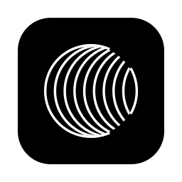
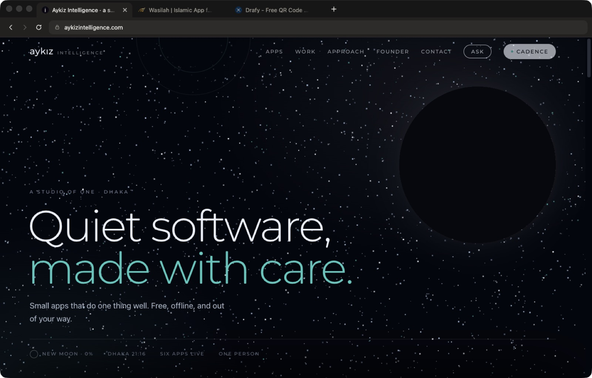

aylight · version 0.7.1 · free, open sourceaylight is the browser I built for my own days. Tabs in a sidebar, a ⌘K box that jumps anywhere, pins for the sites you live in, and chrome that lets your desktop show through. Nothing else on the screen.
No accountNo trackingUpdates itselfSource on GitHub

aylight checks GitHub every few hours, downloads the new build quietly, and asks for one restart from the sidebar.
Unsigned Mac apps cannot swap themselves, so aylight tells you a version is out and opens this page. One download, drag to Applications.
The whole browser is a few hundred lines on GitHub. Read it before you trust it. Builds come from GitHub Actions, not from my laptop.
One box for your open tabs, bookmarks, history and a Google search. Type, arrow down, Enter. ⌘Enter opens a new tab.
⌘⇧P turns a tab into a small icon at the top of the sidebar. Pins come back every launch and ⌘W leaves them alone.
Every tab has room for its name. Hide the sidebar with ⌘⇧S when you want the page alone.
⌘D keeps the page you are on. It lives under your tabs, a click away.
On Mac and Windows the chrome is real system glass, so your wallpaper comes through.
Quit and reopen, your tabs are where you left them. Closed one by mistake? ⌘⇧T brings it back.
Start typing and it finishes the site you meant from your own history. Anything else goes to Google.
Your logins live in one private profile on your computer and survive every restart.
They land in your Downloads folder and show at the foot of the sidebar with progress. Click to open, right-click to reveal.
⌘F, then ⌘G to step through matches. Esc puts it away.
Sites work the way they do in Chrome, because the engine underneath is the same.
aylight is free and I have not paid Apple or Microsoft for a signing certificate, so your computer will ask before it opens it the first time. That is expected, and it happens once.
Mac: drag aylight to Applications and open it once. macOS says it could not verify the app, that is the unsigned notice. Go to System Settings, Privacy & Security, click Open Anyway, and it opens from then on. If you downloaded 0.7.0 and saw “damaged”, bin that copy and download again: 0.7.1 fixed it.
Windows: if SmartScreen appears, click More info, then Run anyway.
Linux: make the AppImage executable with chmod +x aylight-*.AppImage, then run it. Linux has no system glass, so aylight paints its own.